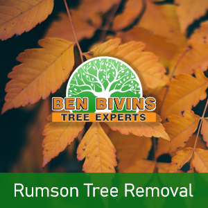
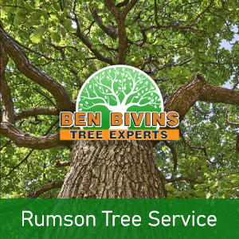

If you are searching for tree removal in Rumson or tree service in Rumson, Ben Bivins Tree Experts has you covered. Ben Bivins Tree Service has been supplying professional tree service to Rumson for years.
All About Rumson Tree Removal

Do you have lifeless or unattractive trees which should be removed? Tree removal is really a high risk task which requires the correct equipment and basic safety practices. Although it may be tempting to get rid of a tree on your own from your Rumson residence, it could be a decision that puts yourself or other people at risk, without the proper knowledge. There can be various reasons why you are looking for a tree removal in Rumson:- Tree is blocking too much sunlight on your property
- Tree is deceased or unhealthy and a probable safety threat
- Tree is too large and presents a danger if big limbs drop
- Tree was harmed during a storm and is beyond the point of preserving
- You are planning on renovations that could eventually damage the trees
- Tree is dropping a great number of limbs, leaves, or pine needles
Ben Bivins Tree Experts is fully insured and licensed tree company. Never assume the risk of using an uninsured tree removal company or depending upon a friend to perform this kind of job. Our staff is skillfully educated and our company has the appropriate credentials to make certain your Rumson tree removal will be performed in the safest and most efficient possible way. Tree removal necessitates usage of heavy machinery and hazardous equipment which should only be left to the pros. Leave it to Ben Bivins Tree Experts! Give us a call today for an estimate for your Rumson tree removal.
Searching for Rumson NJ Tree Service?

We carry out all facets of Rumson tree service. A few of these solutions include:- Tree Trimming – Are trees on your property overgrown? Is your yard devoid of natural light on account of an overgrown tree? Trimming a tree’s branches may make a big difference and may allow you to keep a tree you otherwise considered eliminating.
- Pruning – Keep the trees happy and healthful. Pruning involves assessing a tree’s overall health and deciding to remove limbs selectively to improve its health and sustainability.
- Crown Reduction – We are able to lessen the scale of your tree’s cover using this process. Our crew will assess your trees and make recommendations to take out particular limbs that will reduce canopy cover.
- Emergency Tree Service – Have you got a downed tree that requires speedy attention? Is there a tree which is close to causing harm if it is not resolved immediately? You could be a candidate for emergency tree service.
If you’re a Rumson homeowner requiring tree service, Give us a call. Appointment time can vary depending on weather, season and our current workload. Our representative will provide you with an estimate and inform you of date ranges available for service after assessing your particular job.
Your Source for Rumson Firewood
It’s hardly surprising that a Rumson tree removal business could have an excess supply of firewood! If you are on the lookout for firewood for a wood burning stove or fireplace, contact Ben Bivins Tree Experts. Firewood supply availability varies all year round.